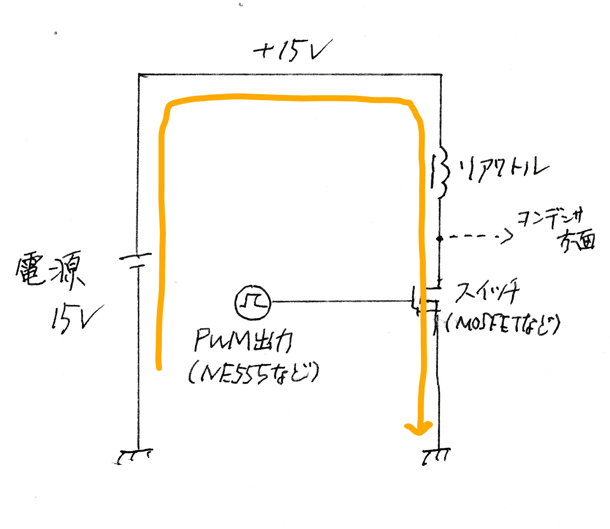

コイルガンのコイルを換装してみる
こんにちは。本来なら引退したはずの元部長です。 文化祭の片付け日に倉庫を掃除していたのですが、そこで後輩がこんなものを見つけてきました。

なんと僕が中３の頃に出展したコイルガンです。
部品取りのために解体したと思い込んでいたのですが、そのままの形で残っていました。
試しに電源を入れてみると…

動きました！この昇圧チョッパの独特の動作音こそが何よりの証拠です。 試し打ちしてみたのですが、何というか…威力は控えめです。 文化祭に出す分にはむしろ安全でいいのですが、やっぱり強くしたいですよね、達成感ですよ。 そこで威力の上がらない原因を少し考えてみましょう。
威力向上のために
このコイルガン、今年出展したものと比べて電圧の割に威力が低いんです。
そう、「電圧の割に」という点に引っかかりました。
その「電圧の割に」威力が低い理由はというと…
ずばりすき間です。

このコイルガンのコイルは外径10mmのアクリルパイプに巻いてあります。 つまりコイル自体の内径が10mmということになります。 対して弾の外径はせいぜい5~6mm。4mm強のすき間が空くことになります。 磁力で弾を発射するコイルガンにはこのすき間が致命的です。 当然、いや細かい理論抜きでもすき間があれば磁力が弱まってしまうことは想像が付くでしょう。 まずはこのすき間を小さくしないといけません。
熱問題
そして出展していた当時からわかっていたことではあるのですが、昇圧チョッパの熱問題も大きいです。 昇圧チョッパのスイッチング素子には原理的に大電流が流れます。 この電力の逃げ場はただ一つ、そう熱です。素子の熱は電流の二乗と素子のオン抵抗に比例します。トランジスタは 比較的オン抵抗が高いので発熱も大きくなるわけです。

当然、この熱もスイッチング素子が壊れない程度に逃がせればいいのですが、
ヒートシンクが小さすぎるのとバイポーラトランジスタのオン抵抗が高いのと相まって
数回充電しただけで触れないほどに熱くなってしまいます。
バイポーラトランジスタの耐熱は100℃前後のことが多く、触れないほどまで熱くなったらその時点で黄信号です。
出展していた当時はPC用のケースファンをホットボンドで無理矢理外付けして急場を凌いでいたのですが、
あまりに不格好ですし根本的な解決にもなりません。
充電停止回路がない
タイトル通りです。単純ですがとんでもない問題です。
充電停止回路がないということは、つまり充電停止は目測でやっていたということです。
電圧計を見ながら目標の電圧に達したら電源コードを抜く、そんな面倒なやり方だったもんですから、
来場客に触ってもらえるような代物じゃありません。
昇圧チョッパの原理上、電圧源からの充電と違い電源電圧付近で充電が止まることなんてことはありません。
何もしなければ電圧がどんどん上がってしまいます。
当然それを放置すればいずれはコンデンサの耐電圧を超え、コンデンサが破裂して…
あの大きさの電解コンデンサです。想像したくもありません。
メインコンデンサの容量が4000μFと大きく充電が遅いのでこの問題には目をつむっていましたが、
さすがに何とかしたいですね。
何をすべきか？
手っ取り早いのはコイルを換装してしまうことでしょう。 今年のコイルガン（素子が壊れたやつ）に使っていたものがちょうど余っています。 ちゃんと5~6mmの弾を想定して内径も6mmに抑えて、なおかつ巻き数も多いんですから。 ちなみにこのコイルの制作経緯は 今年の部誌 をご覧ください。
そして昇圧チョッパも換装したいですね。
これまた今年のコイルガンに使っていたやつが余っていて、
これに関しては熱問題はないはずなのでぴったりです。
さらに充電停止回路も付いています。
一気に問題が三つも解決するなんて、もっと早くやればよかった気もします。
やってみよう
そうと決まればあとはやるだけです。まずは筐体から。